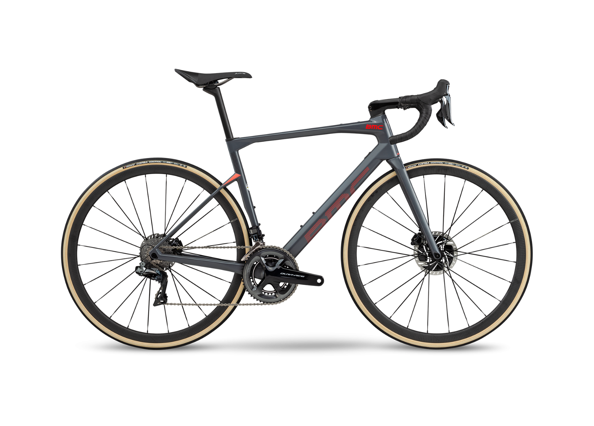

- SPECIALIEZED
- BMC
- cannondale
BMC
BMC's relationship to performance cycling began when BMC began supplying the Swiss professional road racing team Phonak with bikes. The team's patron was Andy Rihs, owner of the world-leading hearing-aid company of the same name. Andy Rihs took over BMC in 2000 with the vision of building a carbon production facility in Grenchen, Switzerland to produce the ‘Porsche of race bikes’ and the Impec road bike was created. Having a carbon production facility at its disposal has heavily influenced how BMC approaches bike manufacturing. The facility is now called the Impec Advanced R&D Lab and it is primarily used for research and development by the company's design and engineering teams.
